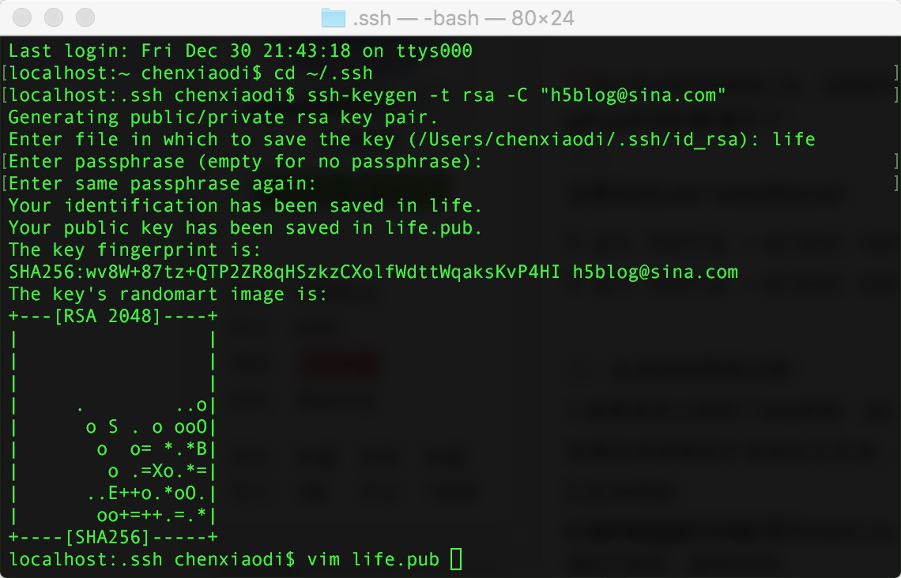

Git
Git是分布式的代码管理工具，远程的代码管理是基于SSH的，所以要使用Git就一定要SSH配置。
Git SSH Key 配置步骤
上图：
步骤分解：
1.进入ssh配置文件所在位置 cd ~/.ssh
2.生成ssk ssh-keygen -t rsa -C "h5blog@sina.com"
3.输入秘钥文件名称life（若果直接回车，系统会用默认名称id_rsa）
4.输入秘钥的密码（可以直接回车不设置密码），如果设置了密码用到该秘钥的时候会提醒你输入密码
5.再次输入秘钥的密码（如果上一步没有设置密码，这一步直接回车）
6.添加密钥到ssh：ssh-add life
7.ls 回车 会看到当前位置有life 和 life.pub，然后vim life.pub 回车，把秘钥粘出来，配置到服务器。
当我决定写自己的博客时，我就遇到一个问题，又需要登录公司的账号，又想在电脑上使用自己的账号，那么如何在一个电脑上同时使用两个Git的账号呢？
一个电脑上同时使用两个Git账号步骤详解
重复上述Git SSH Key生成步骤，上面的秘钥文件名称是life，这次注意设置生成秘钥名称的时候为了区别于之前的秘钥设置成work
生成好了以后ls回车查看一下 至少应该是有life，life.pub，work，work.pub四个文件的。
新建一个config文件 touch config
编辑config文件 vim config 回车 i 开始编辑config 下面的内容copy到config里(HostName改成你自己的git服务器的ip或者域名),esc :wq回车 就保存好了
host life HostName http://github.com User h5blog IdentityFile ~/.ssh/life Host work HostName 10.10.10.10 User work IdentityFile ~/.ssh/work
这里是通过不同的host来找不同的配置文件，如果同一个host下，需要登录好几个账号可以直接ssh-add filename 来切换 例如ssh-add life
一切都配置好了，现在可以开始使用git了，介绍几个常用的git命令
Git常用命令
git clone git@github.com:h5blog/blog.git 将git服务器上的代码克隆到本地
git status 本地git状态，包括修改了哪些文件，删除了哪些文件等等
git add. 把要提交的文件的信息添加到索引库中
git commit -m "修复了某个bug" git依据索引库中的内容来进行文件的提交
git pull 拉取一下git服务器上最新的代码
git pull 把本地代码上传到git服务器上
git branch 查看当前所在分支
git checkout -b dev 新建一个dev分支
git checkout -b dev 新建一个dev分支
git checkout dev 切换到dev分支
git merge master 把master的内容合并到dev
git remote -v 当前git的服务器地址